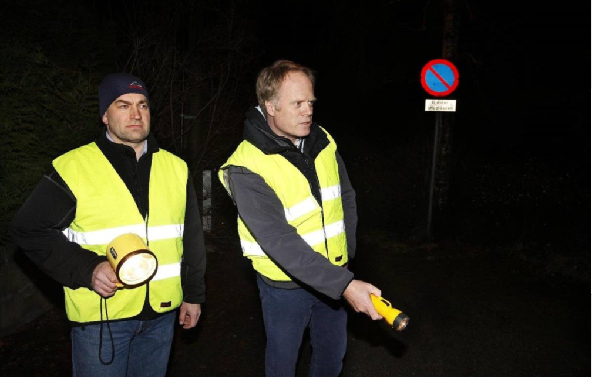

Gal dame med navn Guri går amok i Oslo sentrum
Lørdag kveld klokka 17:45 ble skudd avfyrt i Oslo sentrum, og i sentrum av alle skuddene sto en krigsforbryter med navn Guri.
Oslo sentrum ble evakuert av politiet så fort som mulig, men det ble likevel 323 drept og 48 skadde.
Da politiet kom til sentrum, var Guri borte, politiet fant masse bevis på åstedet, men ingenting som kunne fortelle hvor Guri hadde dratt
Noen som overlevde Guris vrede sa dette til repporterene våre: "Det var noe av det skumlese jeg har sett, Guri løp rundt i rosa kjole og drepte alle i sin vei, hun var som en en persons arme."
Andre vitner tørr enda ikke snakke om saken, og mange er fremdeles på sykehuset uten å klare å si ett eneste ord. Noen på åstedet tok dette bildet, og der ser vi en ukjent mann med skjelettmaske, om han jobber med Guri er usikkert
Folket frykter at Guris allierte er tilbake
Ettersom Guri har kommet tilbake og gjennstartet sin tidligere terror, frykter mange hva dette kan bety. Noen tror dette kan bety at Schnabel-klan, alliansen mellom terrorgruppene Guri, Mattilsynet, Nynorskforbunet, Nrk og Olsen Banden, kommer tilbake med mer terror
Schnabel-klan har siden de ble oprettet i 1756 terrorisert mange kongeriker, og blitt fryktet av alle verdensmaktene
Denne organisasjonen har ikke gjort mye i det siste, og mange trodde dette betydde deres slutt, men Guris angrep kan tyde på noe annet.
Politiet gjør alt i deres makt for å finne og stoppe Guri
Politiet har sagt til media at å fange Guri er høyeste prioritet, og at de skal prøve å tilkalle ekstra hjelp fra folk med erfaring i å håndtere medlemmer av Schnabel-klan.
Ettersom politiet enda ikke har klart å fange noen av hovedmedlemmene i Schnabel-klan, er det mange som tviler på deres evne til å spore og fange Guri.
Detektiv Langpanne og detektiv Bergfjell er på saken
Mandag morgen fikk vi vite at Superdetektivene Langpanne(venstre) og Bergfjell(høyre), er sendt inn av Regjeringen for å finne og stoppe Guri
Mange mener dette er veldig betryggene, siden Langpanne og Bergfjell aldri har feilet i en sak før
Med Bergfjells lyskaster og Langpannes lommelykt fra nille, vil de lyse opp natten og finne sannheten